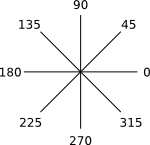
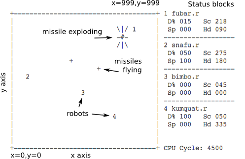

(C) Copyright 1985, All rights reserved.
CROBOTS is copyrighted by:
Tom Poindexter(C) Copyright 2020, All rights reserved.
FORTHROBOTS is copyrighted by:
Vladlen PopolitovCROBOTS is Copyright 1985 Tom Poindexter.
CROBOTS is distributed under terms of the GNU General Public License, version 2.
THIS SOFTWARE AND MANUAL ARE PROVIDED "AS IS" WITHOUT WARRANTY OF AND KIND, EITHER EXPRESSED OR IMPLIED, INCLUDING, BUT NOT LIMITED TO, THE IMPLIED WARRANTIES OF MERCHANTABILITY AND FITNESS OF PURPOSE. THE USER OF THIS SOFTWARE AND MANUAL ASSUME ALL RISKS.
FORTHROBOTS is a game based on computer programming. Unlike arcade type games which require human inputs controlling some object, all strategy in FORTHROBOTS must be complete before the actual game begins. Game strategy is condensed into a Forth language program that you design and write. Your program controls a robot whose mission is to seek out, track, and destroy other robots, each running different programs. Each robot is equally equipped, and up to four robots may compete at once. FORTHROBOTS is best played among several people, each refining their own robot program, then matching program against program.
FORTHROBOTS consists of a Forth compiler, a virtual computer, and battlefield display (text graphics only, monochrome or color). The FORTHROBOTS compiler accepts a limited (but useful) subset of the Forth language. The Forth robot programs are aided by hardware functions to scan for opponents, start and stop drive mechanisms, fire cannons, etc. After the programs are compiled and loaded into separate robots, the battle is observed. Robots moving, missiles flying and exploding, and certain status information are displayed on the screen, in real-time.
FORTHROBOTS will most likely appeal to programmers (especially those who think they can write the "best" programs), computer game enthusiasts, people wishing to learn the Forth language, and those who are interested in compiler design and virtual computer interpreters.
FORTHROBOTS does not use menus, windows, pop-ups, or any other user-friendly interface. Since the emphasis is on designing and writing robot control programs, FORTHROBOTS is started as a compiler might be started, from the OS command line.
FORTHROBOTS can either run one match (single play), in which the full screen, realtime battlefield display is used, or several matches (match play), in which only the name of the winner is printed after each match. Single play is the default. Match play is intended to see how robot programs perform on the average. Match play can consume several hours of computer time depending on the number of matches and cpu cycle limit, and can be run overnight.
FORTHROBOTS is started from the DOS prompt:
A>FORTHROBOTS [options] robot-program-1 [robot-program-n] [>file]
Valid options and parameters are:
-t (optional) |
Tournament mode. |
-mxxx (optional) |
Run a series of matches, were xxx is the number of matches.
There should be no spaces between -m and the number. If
-m is not specified, then the default is to run one match and
display the realtime battlefield. |
-lxxx (optional) |
Limit the number of machine cpu cycles per match when -m is
specified. There should be no spaces between -l and the number.
The default cycle limit is 500,000 when -m is specified |
robot-programs (required) |
The file name of the FORTHROBOTS source program(s). Up to four files may be
specified. If only one file is specified, it will be "cloned" into another, so
that two robots (running the same program) will compete. Any file name may be
used, but for consistency use '.fth' as an extension. |
>file (optional) |
Use OS redirection to get a compile listing (-c option)
or to record matches (-m option). |
C:>FORTHROBOTS -m1 -l500000 robot1.fth robot2.fth robot3.fth
C:>FORTHROBOTS -t -m50 -l200000 robot1.fth robot2.fth >save
C:>FORTHROBOTS -c robot1.fth
The battlefield is a 1,000 by 1,000 meter square. A wall surrounds the perimeter, so that a robot running into the wall will incur damage.
The lower left corner has the coordinates x = 0, y = 0; the upper right corner has the coordinated x = 999, y = 999.
The compass system is oriented so that due east (right) is 0 degrees, 90 is north, 180 is west, 270 is south. One degree below due east is 359.

The main offensive weapons are the cannon and scanner. The cannon has a range of 700 meters. There are an unlimited number of missiles that can be fired, but a reloading factor limits the number of missiles in the air at any one time to two. The cannon is mounted on an independent turret, and therefore can fire any direction, 0-359, regardless of robot heading.
The scanner is an optical device that can instantly scan any chosen heading, 0-359. The scanner has a maximum resolution of ±10 degrees. This enables the robot to quickly scan the field at a low resolution, then use maximum resolution to pinpoint an opponent.
The only defense available are the motor drive and status registers. The motor can be engaged on any heading, 0-359, in speeds from 0-100 percent of power. There are acceleration and deceleration factors. A speed of 0 stops the motor. Turns can be negotiated at speeds of 50% and less, in any direction. Of course, the motor drive can be engaged any time, and is necessary on offense when a target is beyond the 700 meter range of the cannon.
Certain status registers provide feedback to the robot. The primary registers indicate the percent of damage, and current x and y locations on the battlefield. Another register provides current drive speed.
A robot is considered dead when the damage reaches 100%. Percent of damage is inflicted as follows:
| 2% | collision into another robot (both robots in a collision receive damage) or into a wall. A collision also causes the motor drive to disengage, and speed is reduced to 0. |
| 3% | a missile exploding within a 40 meter radius. |
| 5% | a missile exploding within a 20 meter radius. |
| 10% | a missile exploding within a 5 meter radius. |
Damage is cumulative, and cannot be repaired. However, a robot does not loose any mobility, fire potential, etc. at high damage levels. In other words, a robot at 99% damage performs equally as a robot with no damage.

Each status block shows the file name of the robot, the damage incurred, the current scan degrees, and the speed and heading. Robots are represented on the field by '1', '2', etc., according to the status block position. The number of elapsed robot cpu cycles is shown at the bottom of the status blocks.
The FORTHROBOTS program can be stopped at any time, by using Ctrl-Break.
The robot cpu is a standard Forth machine. Stack and memory is limited by Forth machine parameters chosen at copile time.
The FORTHROBOTS compiler accepts an almost full subset of the Forth language.
Output to screen, files operations, memory allocation operations.
The intrinsic function library provides machine level control and certain arithmetic functions. These functions do not consume any of the program code space or data stack, except for the three words for call/return sequences. No explicit linking is required to use any intrinsic function.
The scan function invokes the robot's scanner, at a specified degree and resolution. scan() returns 0 if no robots are within the scan range or a positive integer representing the range to the closest robot. Degree should be within the range 0-359, otherwise degree is forced into 0-359 by a modulo 360 operation, and made positive if necessary. Resolution controls the scanner's sensing resolution, up to +/- 10 degrees.
Examples: 0 45 scan range ! \ scan 45, with no variance and store to range variable 10 365 scan range ! \ scans the range from 355 to 15
The cannon function fires a missile heading a specified range and direction. cannon() returns 1 (true) if a missile was fired, or 0 (false) if the cannon is reloading. Degree is forced into the range 0-359 as in scan(). Range can be 0-700, with greater ranges truncated to 700.
Examples:
45 degree ! \ set a direction to test
2 degree @ scan dup 0 > if \ see if a target is there */
range ! cannon \ fire a missile
else drop then \ else drop range from stack
The drive function activates the robot's drive mechanism, on a specified heading and speed. Degree is forced into the range 0-359 as in scan(). Speed is expressed as a percent, with 100 as maximum. A speed of 0 disengages the drive. Changes in direction can be negotiated at speeds of less than 50 percent.
Examples: 100 0 drive \ head due east, at maximum speed 0 90 drive \ stop motion
The damage function returns the current amount of damage incurred. damage takes no arguments, and returns the percent of damage, 0-99. (100 percent damage means the robot is completely disabled, thus no longer running!)
Examples:
damage d ! \ save current state
\ other instructions
damage d @ = if \ compare current state to prior state
100 90 drive \ robot has been hit, start moving
damage d ! \ get current damage again
then
The speed function returns the current speed of the robot. speed takes no arguments, and returns the percent of speed, 0-100. Note that speed may not always be the same as the last drive, because of acceleration and deceleration.
Examples:
100 270 drive \ start drive, due south
\ other instructions
speed 0 = if \ check current speed
20 90 drive /* ran into the south wall, or another robot */
then
The loc_x function returns the robot's current x axis location. loc_x takes no arguments, and returns 0-999. The loc_y function is similar to loc_x, but returns the current y axis position.
Examples:
50 180 drive \ start heading for west wall
begin loc_x 20 > while
repeat \ do nothing until we are close
0 180 drive \ stop drive
The r_rand function returns a random number between 0 and limit, up to 32767.
Examples: 360 r_rand degree ! \ pick a random starting point */ 0 degree @ scan range ! \ and scan */
The sqrt returns the square root of a number. Number is made positive, if necessary.
Examples: x1 @ x2 @ - x ! \ compute the classical distance formula */ y1 @ y2 @ - y ! \ between two points (x1,y1) (x2,y2) */ x @ dup * y @ dup * + r_sqrt distance ! \ r_sqrt(x*x+y*y)
These functions provide trigonometric values. r_sin, r_cos, and r_tan, take a degree argument, 0-359, and returns the trigonometric value times 100,000. The scaling is necessary for compatibility with old robots code since the CROBOT cpu was an integer only machine, and trig values are between 0.0 and 1.0. atan takes a ratio argument that has been scaled up by 100,000, and returns a degree value, between -90 and +90. The resulting calculation should not be scaled to the actual value until the final operation, as not to lose accuracy. See programming examples for usage.
FORTHROBOTS programs are not unlike other Forth programs. Other functions can be defined, along with external variables.
Four FORTHROBOTS are provided as examples:
rabbit.fth is a simple robot that merely runs around the field, randomly.
counter.fth uses a slow incremental scan to locate enemies. Moves when hit.
rook.fth restricts its scanning to the four compass points. Results in a very fast scan.
sniper.fth is the most complex and devastating of the
sample robots. It sits in a corner so that it only has to scan 90 degrees.
Sniper's distance() and plot_course() routines are quite handy. Save them for
your programs. Also, note that the main scan routine will "back up" a few
degrees after a target has been found and fired upon. This should catch robots
trying to flee away from the direction you are scanning. If the target moves the
other way, the normal scan increment will find it.
FORTHROBOTS is written entirely in 'C++'. The compiler section was developed with the aid of the ForthScriptCPP class.
* Unix is a trademark of Bell Telephone Laboratories.
** MS-DOS is a trademark of Microsoft, Inc.
*** Lattice is a trademark of Lattice, Inc.
**** IBM is a trademark of International Business Machines, Inc.
HTML version last modified: 8 March, 2020
Formatted for HTML by: Neil Fraser